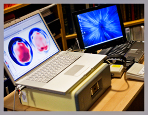
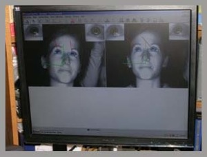
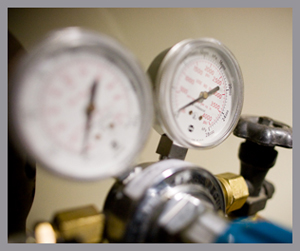
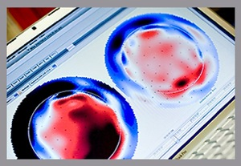

Equipment
- 
- 
- 
- 
EEG Data Collection Equipment
Our laboratory accommodates one 256-channel and two 128-channel dense-array electroencephalogram (EEG) systems (GES 200), as well as one portable 128-channel dense-array EEG system (GES 300). All of our EEG equipment and acquisition software is developed and supported by Electrical Geodesics, Inc. in Eugene, Oregon.
Our lab is also equipped with a Geodesic Photogrammetry System (GPS) used for the reconstruction of 3D Geodesic Sensor Net electrode positions. The GPS uses 11 CCD cameras positioned on a polyhedron-based structure to acquire a single, simultaneous, digital image of each sensor on the subject’s scalp.
Eye Tracking System
The DEL includes an eye-tracking system, Smart Eye, integrated with the EEG and peripheral electrophysiology. Smart Eye can track head and eye movements up to 270 degrees. The key component of Smart Eye systems is the computerized analysis of video images. Our system uses two cameras together with IR-flash illuminators. These IR illuminators are controlled by customized hardware so that each system uses primarily its own illumination. This makes the system robust to a range of natural illumination conditions as well as the variable light caused by an experimental stimulus presentation monitor.
Computer Equipment
Both of our stationary systems each have a 1.8 GHz dual Power PC G5 with a 580 GB hard drive and 3 GB of RAM (OS 10.4.11) for data collection and analysis. Stimulus presentation, experimental design, and behavioral data analysis is conducted on two 3 GHz dual Dell Dimension 2350s with 100 GB hard drives and 1 GB of RAM (Windows XP).
Acoustic Startle and Peripheral Psychophysiology Equipment
Our laboratory is outfitted with peripheral electrophysiology monitoring capabilities for assessing the startle eye blink response, electromyogram, heart rate, and skin conductance in conjunction with high-density EEG. We have one stationary Coulbourn system and one portable Coulbourn system for use within the fMRI scanning facility of Yale’s Anlyan Center to permit co-registration of electrophysiology and BOLD response. We also have two portable San Diego startle systems that can be used in clinics, homes, or schools. All equipment interfaces with paradigms developed in the E-prime experimental platform.
Analysis Software and Capabilities
Biosignal analysis within the laboratory is conducted on four portable and five stationary workstations by two dedicated, full-time professional staff with expertise in various software modalities. Electrical Geodesic’s Net Station 4.3 is used for electroencephalography signal processing, wavelet transform analysis, and for the extraction of event-related potentials from raw data. Brain Electrical Source Analysis (BESA) is also used for basic signal processing on select projects. BESA is our analysis package of choice for using multiple source montages to transform electrical activity recorded on the scalp into actual brain function. SPSS and MATLAB are used for basic statistics.